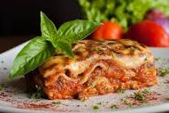

This is lasagna Page

Description
Lasagna is Italian American parlance and refers to the aforementioned cheesy composition, the dish in toto.
Ingredients
- Steps
-
Start by making the sauce with ground beef, bell peppers, onions, and a combo of tomato sauce, tomato paste, and crushed tomatoes. The three kinds of tomatoes gives the sauce great depth of flavor.
Let this simmer while you boil the noodles and get the cheeses ready.
-
We're using ricotta, shredded mozzarella, and parmesan -- like the mix of tomatoes, this 3-cheese blend gives the lasagna great flavor!
From there, it's just an assembly job.
-
A cup of meat sauce, a layer of noodles, more sauce, followed by a layer of cheese. Repeat until you have three layers and have used up all the ingredients.
Bake until bubbly and you're ready to eat!